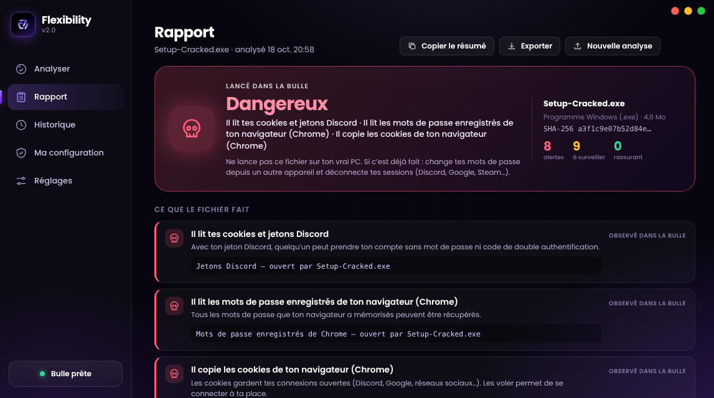

Une bulle jetable
Windows SandboxLe fichier est lancé dans un Windows tout neuf, coupé de tes fichiers. Quand la bulle se ferme, tout disparaît avec elle.
Glisse un mod, un crack ou un .exe douteux. Flexibility le lance dans une bulle jetable et te dit en clair ce qu’il fait. Ton vrai PC ne le voit jamais.
Les vols de comptes via de faux mods sont courants chez les joueurs.
01Fonctions
Le fichier est lancé dans un Windows tout neuf, coupé de tes fichiers. Quand la bulle se ferme, tout disparaît avec elle.
Pas de logs illisibles : « il lit tes cookies Discord », « il copie les mots de passe de Chrome », « il chiffre tes documents ».
Faux jetons Discord, faux mots de passe, faux portefeuilles, Steam, Minecraft… Si le fichier y touche, Flexibility le voit. Tout est factice.
Chaque adresse contactée est localisée. Un serveur hors de ton pays est signalé « à l’étranger ». Désactivable dans les réglages.
Clés de démarrage, tâches planifiées, services, fichiers déposés ou cachés, modification du fichier hosts : comparés avant et après.
Sans rien lancer : signature, contenu, adresses et mots suspects. Moins complet, mais utilisable sur toutes les éditions.

02Sécurité
Flexibility observe, il n’exécute rien lui-même. Seule une copie du fichier entre dans la bulle.
« Rien d’anormal observé » ne veut pas dire « sûr » : certains programmes attendent plusieurs minutes, ou détectent qu’ils sont dans une bulle. Le doute reste un bon réflexe : si tu hésites, ne l’ouvre pas sur ton vrai PC.
03Installation
Windows Sandbox demande Windows 10 ou 11 Pro, Entreprise ou Éducation. Flexibility te le dit dans « Ma configuration » et peut activer la fonction pour toi (un redémarrage est demandé).
Télécharge l’installateur, double-clique, accepte la demande d’autorisation de Windows.
Dépose-le dans la fenêtre, ou fais un clic droit sur le fichier puis « Analyser avec Flexibility ».
Windows Sandbox n’y est pas livré. Tu peux passer en Pro, ou utiliser l’analyse rapide, qui examine le fichier sans le lancer.
v2.0 · Windows 10 / 11 Pro
Gratuit · sans compte
Le lien de téléchargement sera ajouté à la mise en ligne de l’installateur.
à renseigner après la création de l’installateur
Windows affiche un avertissement ? L’installateur n’est pas encore signé : SmartScreen peut afficher « Windows a protégé votre PC ». Clique sur « Informations complémentaires », puis « Exécuter quand même ». Compare l’empreinte ci-dessus avec celle du fichier téléchargé si tu veux vérifier.
04FAQ
Oui, sans compte ni abonnement.
La bulle est fournie par Windows Sandbox, une fonction de Windows 10 et 11 Pro, Entreprise et Éducation. Elle n’existe pas sur Windows Famille. Sur Famille, l’analyse rapide reste disponible.
Il est lancé uniquement dans la bulle, avec une copie en lecture seule, sans partage du presse-papiers. Aucune protection n’est absolue, mais le fichier n’est jamais exécuté sur ton système.
Non. Un programme peut attendre avant d’agir, détecter la bulle ou télécharger sa charge plus tard. Flexibility le rappelle dans chaque rapport : c’est un indice, pas une garantie.
Des fichiers factices (faux jetons Discord, faux mots de passe de navigateur, faux portefeuilles…) posés dans la bulle. Les voleurs de comptes vont les chercher : s’ils y touchent, tu le sais. Rien de réel n’est utilisé.
.exe, .msi, .bat, .cmd, .ps1, .vbs, .js, .hta, .lnk, .scr, .com, .jar (si Java est présent) et les archives .zip.
Non. Seule l’option de localisation des serveurs envoie à un service (ipwho.is) les adresses IP contactées par le fichier. Tu peux la couper dans les réglages.